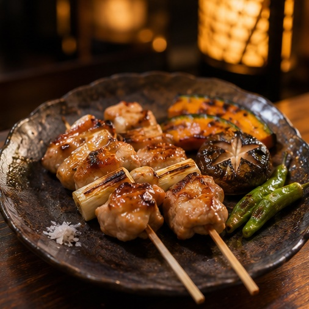

一皿から、気軽に。
しいたけやししとうなど、仕入れに合わせた野菜を炭火で焼きます。鶏串を待つ間のひと皿にも、もう少しつまみたいときにも。人数やお好みに合わせて、店頭でお選びください。
その日の内容は、店内でご案内します。
野菜の組み合わせは、入荷によって変わります。お品書きに載っている食材や、苦手なものについてはスタッフへお声がけください。
西口店で、お待ちしています。
炭火酒場つむぎ西口店は16時から23時まで営業しています。営業案内は店舗一覧にも掲載しています。
西口店の小皿に、炭火で焼く野菜をご用意しました。鶏串と合わせて、少しずつお楽しみください。

しいたけやししとうなど、仕入れに合わせた野菜を炭火で焼きます。鶏串を待つ間のひと皿にも、もう少しつまみたいときにも。人数やお好みに合わせて、店頭でお選びください。
野菜の組み合わせは、入荷によって変わります。お品書きに載っている食材や、苦手なものについてはスタッフへお声がけください。
炭火酒場つむぎ西口店は16時から23時まで営業しています。営業案内は店舗一覧にも掲載しています。